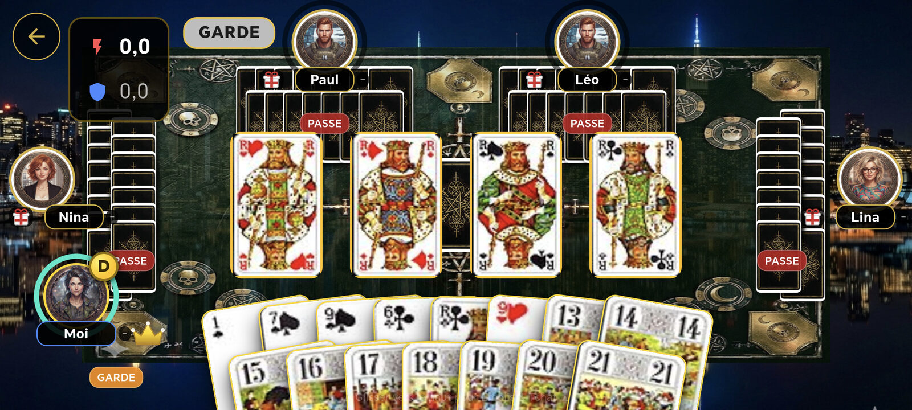
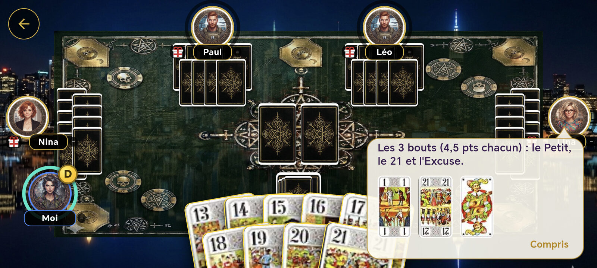
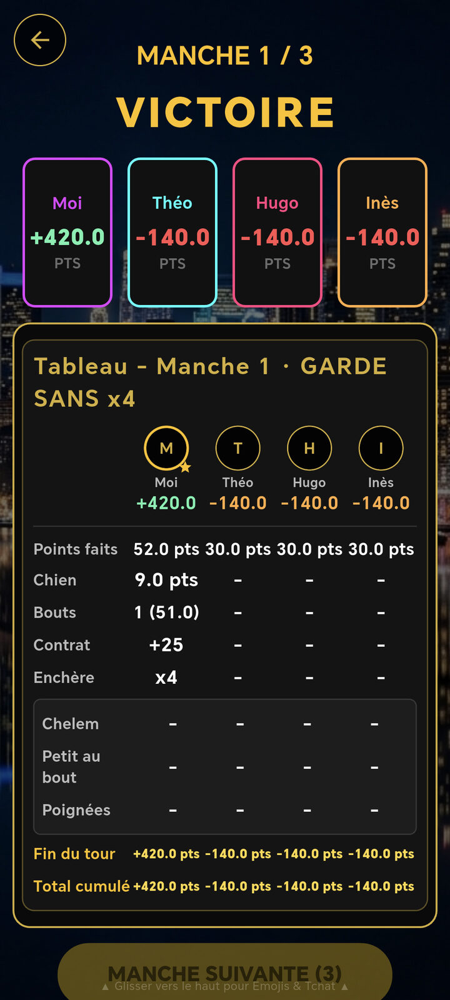

Apprendre le jeu de tarot en quelques minutes
Cette page réunit tout ce qu'il faut savoir pour jouer une partie de Tarot Gothique : le nombre de cartes selon les joueurs, les règles propres à la variante gothique, la valeur de chaque carte, les points à réaliser selon les Bouts, les contrats et la façon de compter les points d'une donne. Gardez-la sous la main pendant vos premières parties sur l'application mobile Android.
1. Variations selon le nombre de joueurs (3, 4, 5 joueurs)
- À 3 joueurs : 24 cartes par joueur, 6 au chien. Chaque joueur joue pour soi contre les deux autres.
- À 4 joueurs : 18 cartes distribuées par joueur, 6 au chien. Jeu classique en solo contre la défense.
- À 5 joueurs (Spécificité Gothique) : 15 cartes par joueur, 3 au chien. Le preneur appelle un roi d'une couleur précise. Le joueur qui possède ce roi devient son partenaire secret pour la manche.

2. Règles Spécifiques de la Variante Gothique
- Règle de la couleur appelée : La couleur du roi appelé ne peut pas être jouée à la première levée (premier pli), sauf si le joueur qui entame possède et joue directement ce roi.
- Règle de l'Excuse au dernier pli : Si l'Excuse est jouée au dernier pli, elle revient au camp qui remporte ce pli. Exception : en cas de chelem, l'Excuse jouée au dernier pli par le camp qui réalise le chelem remporte ce pli.
- Chelem : remporter tous les plis de la donne. Le chelem peut être annoncé pendant les enchères.
3. Valeur des cartes du jeu de tarot (comptage des plis)
À la fin de la manche, les cartes s'associent par paires (une carte forte + une petite carte) pour le décompte :
| Type de carte | Valeur en points |
|---|---|
| Le Petit (1 d'atout), le 21 d'atout et l'Excuse (Les 3 Bouts) | 4,5 points chacun |
| Un Roi | 4,5 points |
| Une Dame | 3,5 points |
| Un Cavalier | 2,5 points |
| Un Valet | 1,5 point |
| Cartes basses / ordinaires | 0,5 point |
4. Contrats et Bouts Nécessaires
Le preneur doit atteindre un seuil de points précis selon le nombre de Bouts (1, 21, Excuse) capturés :
- Avec 3 Bouts : 36 points minimum requis.
- Avec 2 Bouts : 41 points minimum requis.
- Avec 1 Bout : 51 points minimum requis.
- Avec 0 Bout : 56 points minimum requis.
5. Les contrats : Petite, Garde, Garde sans, Garde contre
Pendant les enchères, chaque joueur passe ou annonce un contrat plus fort que le précédent. Plus le contrat est élevé, plus la donne rapporte (ou coûte) de points :
| Contrat | Le chien | Multiplicateur |
|---|---|---|
| Petite | Retourné, pris par le preneur, qui écarte | × 1 |
| Garde | Retourné, pris par le preneur, qui écarte | × 2 |
| Garde sans | Non retourné, compté pour le preneur | × 4 |
| Garde contre | Non retourné, compté pour la défense | × 6 |
6. Déroulement d'une manche
- Distribution : les cartes sont distribuées et quelques-unes sont mises de côté pour former le chien.
- Enchères : chaque joueur annonce s'il veut prendre ; l'enchère la plus forte désigne le preneur.
- Chien : selon le contrat, le preneur intègre le chien à son jeu puis écarte le même nombre de cartes.
- Jeu de la carte : il faut fournir la couleur demandée ; à défaut, couper avec un atout et monter sur l'atout le plus fort si possible.
- Décompte : en fin de manche, on compte les points des plis du preneur et on les compare au seuil fixé par son nombre de Bouts.

7. Comment compter les points au tarot
En fin de donne, on additionne les points des plis du preneur (et de son partenaire à 5 joueurs), écart compris. On compare ce total au seuil fixé par le nombre de Bouts remportés : la différence s'appelle l'écart.

- Formule : valeur de la donne = (25 + écart) × multiplicateur du contrat. Le preneur gagne cette valeur contre chaque défenseur s'il réussit, ou la perd s'il chute.
- À 3 ou 4 joueurs : le preneur reçoit (ou paie) la valeur de la donne une fois par adversaire.
- À 5 joueurs : chaque défenseur paie (ou reçoit) la valeur de la donne ; le preneur en reçoit deux fois la valeur, son partenaire une fois. Si le preneur s'est appelé lui-même, il joue seul contre quatre.
Exemple à 4 joueurs : le preneur annonce une Garde, remporte 2 Bouts et totalise 47 points. Avec 2 Bouts, il lui en fallait 41 : l'écart est de 6. La donne vaut (25 + 6) × 2 = 62 points. Chacun des trois défenseurs perd 62 points et le preneur en gagne 186.
Dans Tarot Gothique, ce calcul est fait automatiquement par l'application et affiché dans la feuille de marque en fin de donne.
8. Petit au bout, poignées et primes
- Petit au bout : le camp qui remporte le dernier pli avec le Petit (1 d'atout) gagne une prime de 10 points, multipliée par le contrat. Elle s'applique même si ce camp perd la donne.
- Poignée : un joueur qui a beaucoup d'atouts peut les montrer avant de jouer sa première carte. Dans Tarot Gothique, la prime vaut 20 points pour une poignée simple, 30 pour une double et 50 pour une triple. Elle n'est pas multipliée par le contrat et revient au camp qui gagne la donne, même si c'est l'autre camp qui l'a montrée. L'application affiche le bouton « Annoncer poignée » dès que votre main le permet.
9. Grille de gains
Le tableau ci-dessous indique le gain correspondant à chaque mise.
| Mise | Gain |
|---|---|
| 200 jetons | 300 jetons |
| 500 jetons | 700 jetons |
| 1 000 jetons | 1 500 jetons |
| 2 000 jetons | 3 000 jetons |
Questions fréquentes sur les règles du tarot
Combien de cartes reçoit chaque joueur au tarot ?
À 3 joueurs, chacun reçoit 24 cartes et 6 cartes forment le chien. À 4 joueurs, 18 cartes par joueur et 6 au chien. À 5 joueurs, 15 cartes par joueur et 3 au chien.
Comment compter les points au tarot ?
On additionne les points des plis du preneur et on les compare au seuil fixé par ses Bouts (56, 51, 41 ou 36 points). La donne vaut alors 25 points plus l'écart, multipliés par le contrat : 1 pour une Petite, 2 pour une Garde, 4 pour une Garde sans et 6 pour une Garde contre.
Qu'est-ce que le petit au bout ?
C'est le fait de remporter le dernier pli avec le Petit, le 1 d'atout. Le camp qui le réussit gagne une prime de 10 points multipliée par le contrat, même s'il perd la donne.
Comment se joue le tarot à 5 joueurs ?
À 5 joueurs, chacun reçoit 15 cartes et le chien compte 3 cartes. Le preneur appelle un roi : le joueur qui le possède devient son partenaire secret. Le preneur gagne ou perd deux fois la valeur de la donne, son partenaire une fois.
Envie de vous entraîner ? Affrontez l'IA du jeu en solo ou découvrez la divination par la Faucheuse réservée aux vainqueurs.